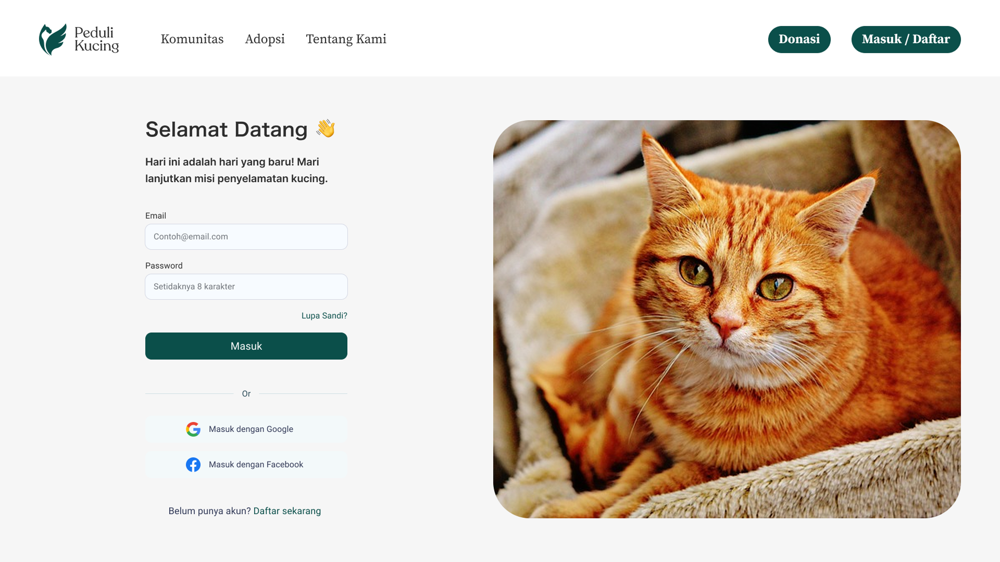
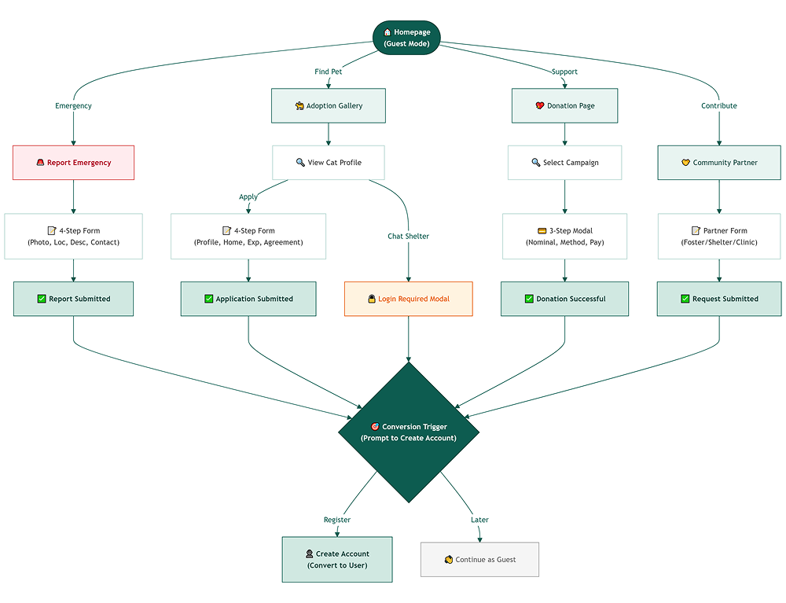
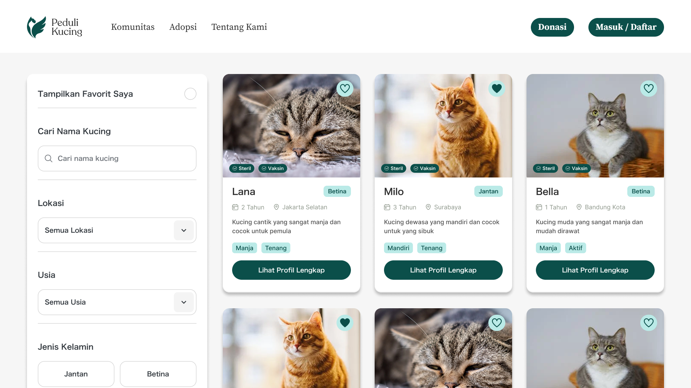
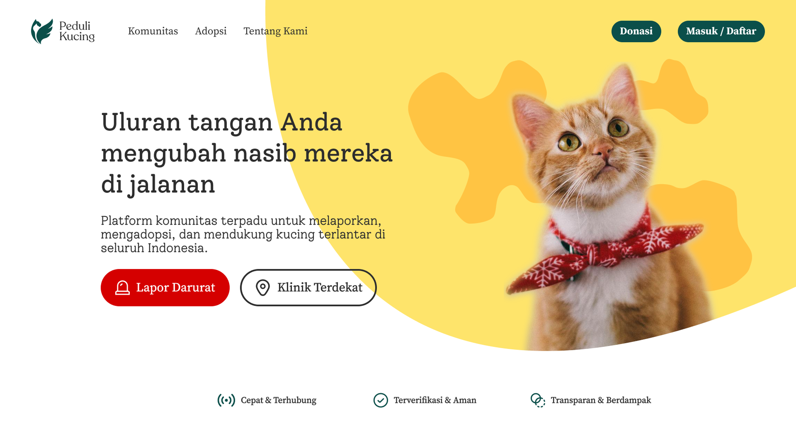
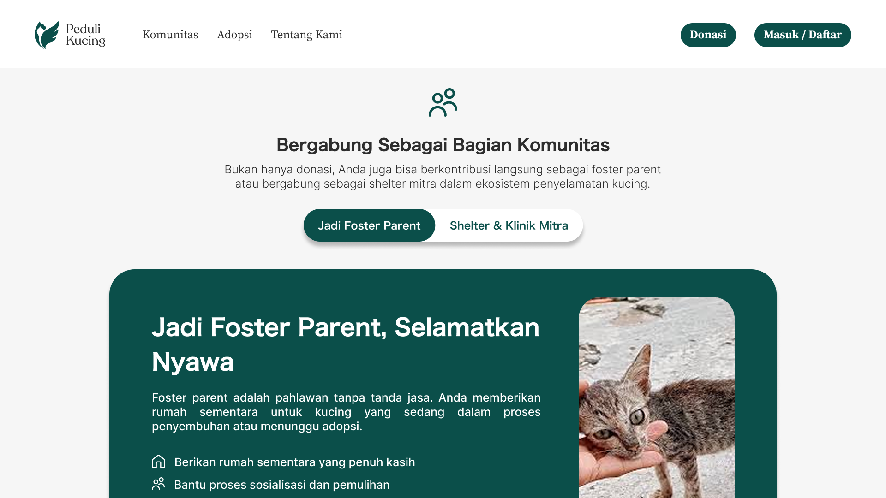
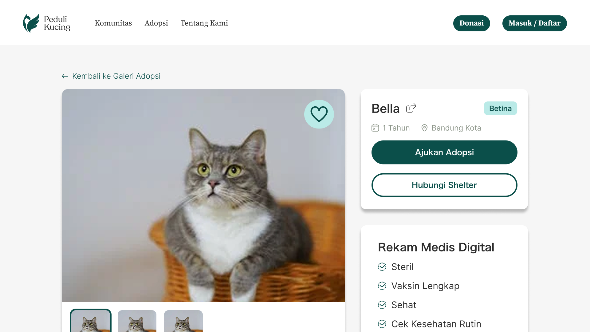

A frictionless, immediate-response platform for reporting and rescuing stray cats — designed with a Guest-First approach to remove every barrier between compassion and action.

Stray cats frequently face emergencies, but reporting and helping them through digital platforms is often slow due to mandatory account creation walls. The friction of forced registration leads to abandoned emergency reports, lost donation opportunities, and delayed rescues.
Peduli Kucing provides a "Guest-First" platform that prioritizes critical rescue actions — emergency reporting, adoption applications, and donations — without requiring login. Strategic post-action prompts naturally convert guests into registered users, proving that removing barriers doesn't mean giving up on user acquisition.
Architecture & Flow
Mapping the frictionless guest journey and conversion pathways — from emergency report to community engagement.





Building Peduli Kucing reinforced that in time-sensitive rescue scenarios, every click matters. Designing a Guest-First experience taught me how to balance frictionless access with strategic conversion — proving that removing barriers doesn't mean giving up on user acquisition. The project validated that empathy-driven design can be both fast and trustworthy.